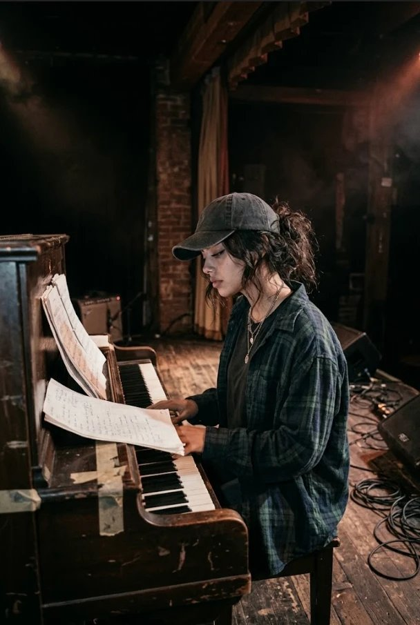
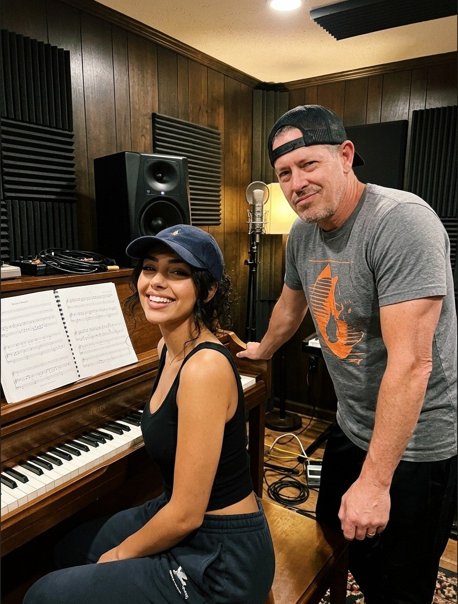
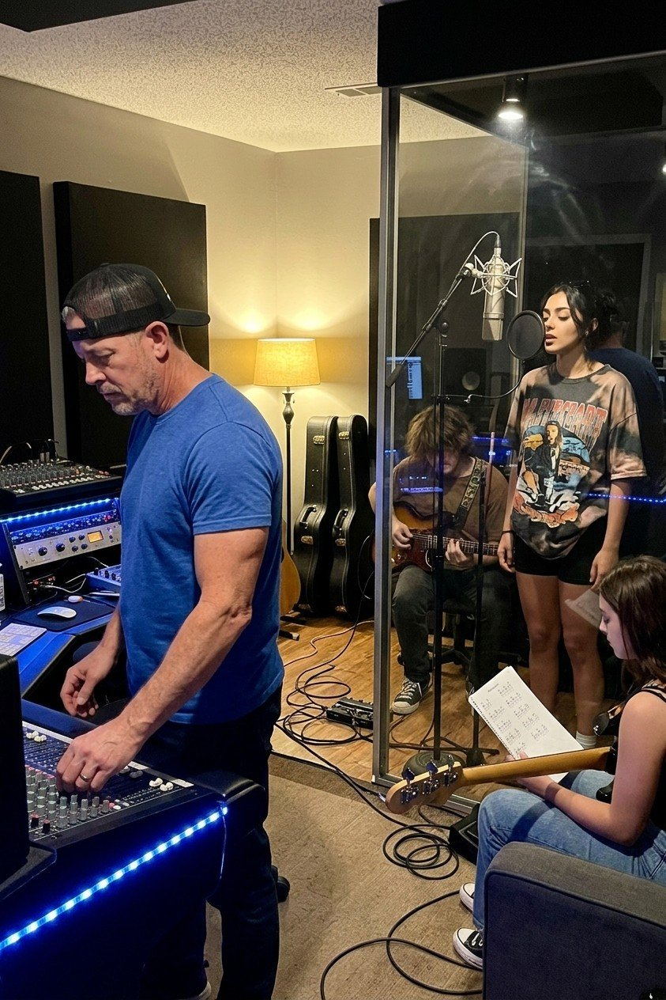

Dark hair, darker tones.



About
Vee Valentine is the sultry, smoke-tinged voice rising from Chicago’s late-night lounges—a striking 23-year-old dark-haired beauty whose easy-listening pop and jazz-inflected lounge music feels like velvet, low light, and a secret shared after midnight.
Born and raised in Chicago, Vee began formal vocal training as a pre-teen and quickly gravitated toward the emotional depth of classic jazz and sophisticated lounge standards. That early foundation still shapes everything she does. Her sound sits at the intersection of timeless elegance and modern ease—smooth, intimate, and quietly addictive. Think candlelit rooms, late conversations, and melodies that refuse to leave you alone.
What started as local performances has grown into a devoted following across the Chicago area and surrounding suburbs. Crowds show up for the voice, stay for the atmosphere, and leave talking about the presence of a young singer who already feels like a seasoned headliner.
Now Vee is stepping fully into her own voice as a songwriter. She has been collaborating closely with award-winning Nashville songwriter and producer Scotty Davis, refining a collection of original material that blends her signature smoky delivery with fresh, emotionally sharp songwriting. Her first original releases are scheduled to arrive in late 2026 and early 2027, marking the next chapter for an artist who has already mastered the art of making a room fall quiet.
Vee Valentine. Dark hair, darker tones, and a voice made for the hours when the city softens—and for the songs she’s only just beginning to tell.